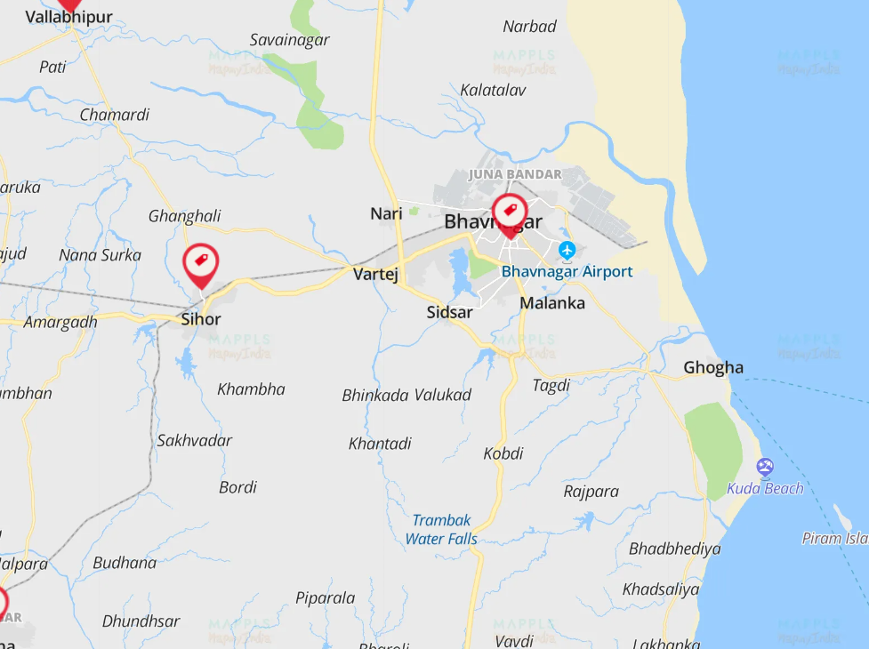
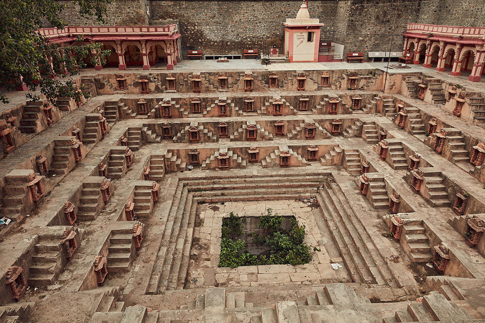
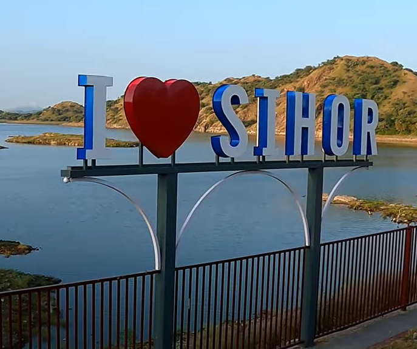
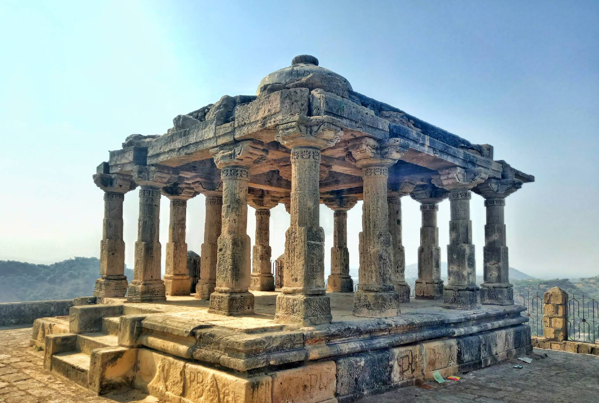
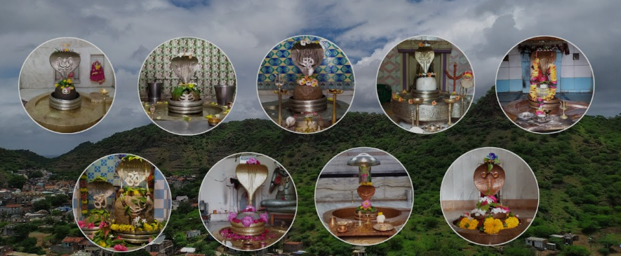
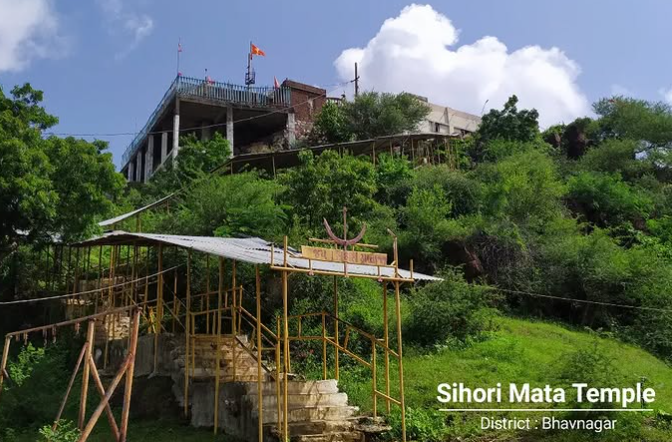
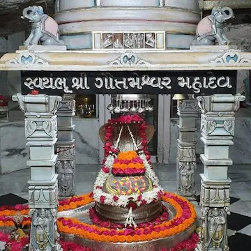
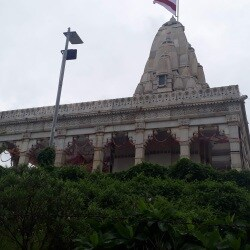

One of most likely for nature lover people
Discover Sihor – Where Tradition Meets Progress.This website is a tribute to my hometown, Sihor. From ancient stepwells and historic temples to leading educational institutions and successful local personalities – explore everything that defines the heart of Sihor.Rich history, adventure spots, famous local shops, schools and colleges, and inspiring success stories from our beloved hometown, Sihor.
       